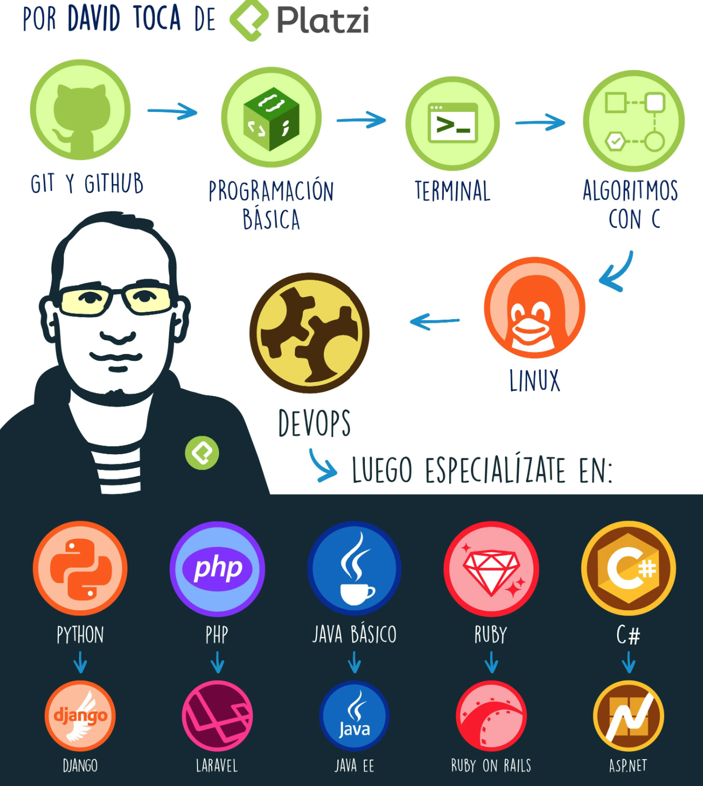

Interactive brainstorming board
We want you to feel part of it and also help others to understand, below you will find a board where you can write your opinions regarding to the different developer profiles that we will study below.
Remember that your opinion is very valid and can be of great help. for others, encourage yourself to participate.
For your comfort, in the option of ZOOM click the option "Fit to Screen"
¿What is Backend?
In the context of software development, "backend" refers to a system in charge of business logic, data processing, database, external system and other system components. For example, when a user searches an e-commerce website, the backend processes the application, runs the database search, and returns the results to the user. The technology and tools used to develop backends may differ depending on the needs of the system, but generally include programming languages and as database tools like:
¿What is Front End?
In software development, the "frontend" refers to the system that is in charge of the presentation and interaction with end users. They are used and used by users on the browser or mobile devices are user interfaces (UI) and user experience (UX). In addition, we are responsible for communicating with the backend and providing results by processing the information entered by the user. In short, the front end is part of the system in charge of the presentation and interaction with the end user, and the backend is in charge of the logic business and data processing. The frontend is developed using programming languages and frameworks such as: